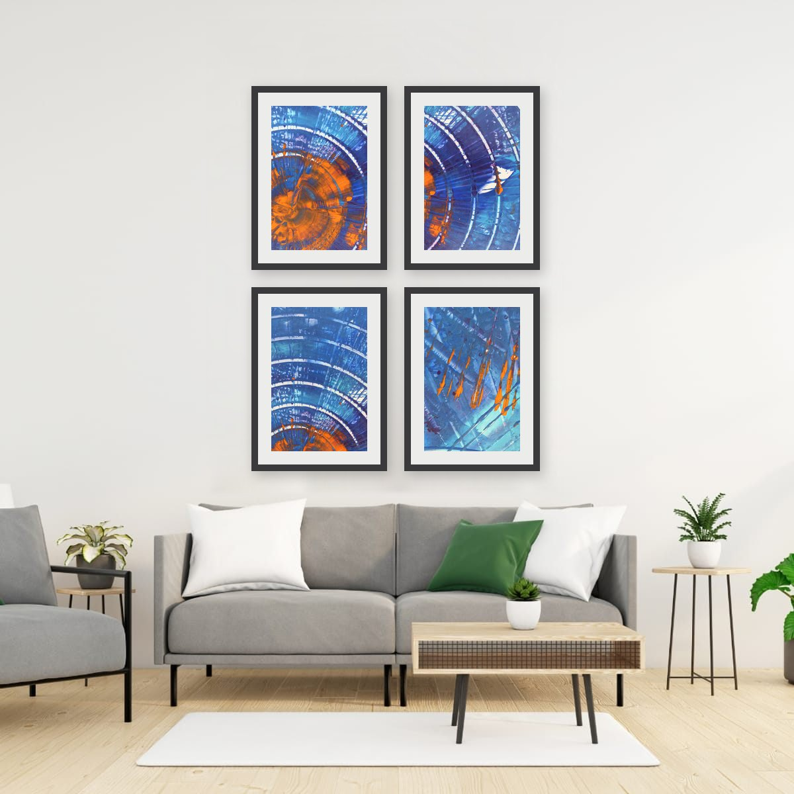

The short answer
Treat the group as one piece. Measure its total width and height, gaps included, and size and hang that block exactly as you would a single artwork. Keep the gaps between frames equal and small, about 2 to 3 inches (5 to 8 cm), and use the same frame on every piece.
Four layouts that always work
There are endless ways to arrange prints, but four simple layouts cover most walls, and all four work with the vertical and horizontal formats my prints come in.
Side by side
Two prints next to each other. Ideal above sofas, beds and sideboards, where you need width. Two verticals side by side fill roughly the same space as one horizontal piece, with more rhythm.
A row of three
Three identical frames in a line. Strong and architectural, great above long furniture. Keep all three exactly the same size, or it stops looking like a set.
A stacked pair
One print above the other. Perfect for narrow walls: between two windows, beside a door, at the end of a hallway. Stacking two horizontals makes a tall, slim block that fits spaces nothing else will.
A grid of four
Two rows of two. Grids look modern and orderly, and they make small prints feel substantial, because together they read as one larger square.

Spacing: the part that makes or breaks it
- Keep gaps equal. Horizontal and vertical gaps should match. The eye notices a difference of even a fraction of an inch.
- Keep gaps small. 2 to 3 inches (5 to 8 cm) for small and medium frames. Larger pieces can take up to about 4 inches (10 cm). Wider gaps break the group apart.
- Measure the outer edges. The total width of the group, gaps included, follows the same rules as a single piece: about two thirds of the furniture below it.
Alignment: tops, or centers?
When all frames are the same size, alignment takes care of itself. When sizes differ, you have to choose.
Aligning the top edges looks clean and formal. Aligning the centers on one horizontal line looks more relaxed and balanced, and it is the method galleries use when they hang different sizes along one wall. Either works, as long as you pick one and stick to it.
Choosing prints that belong together
A group needs a common thread, otherwise it looks like a collection of leftovers. The thread can be:
- The same palette. Different images, shared colors.
- The same frame. Identical frames unify even quite different images.
- The same source. This is where painting details are especially useful. Every collection on this site holds fifteen details from one painting, so any two or three of them already share colors, texture and energy, while each shows a different moment of the same surface.
Mixing vertical and horizontal pieces in one group is possible too: a horizontal print flanked by two verticals is a classic, symmetrical arrangement.
Mixing vertical and horizontal
A group does not have to be all one orientation. One horizontal piece flanked by two verticals is a classic, symmetrical arrangement above a sofa or bed. A horizontal print stacked above two verticals placed side by side also works well. The key is that the outer edges of the group still form a clear, simple shape, usually a rectangle, and that the gaps stay equal.
Because my prints can hang either way, you can even make a mixed group out of details from the same painting, with some turned vertical and some horizontal.
How many prints for a wall?
As a rule of thumb, the bigger the wall and the furniture, the bigger the pieces, not necessarily the more pieces. Two or three larger prints usually look calmer and more confident than eight small ones. Grids and larger groups shine on walls without furniture, in hallways, or where small pieces would otherwise get lost.
Laying it out without making holes everywhere
- Arrange the frames on the floor first and adjust until you like the composition.
- Trace each frame on paper, cut out the shapes and mark where the hanging hardware sits on each.
- Tape the paper shapes to the wall with painter's tape, check the gaps with a level and a tape measure.
- Drill through the marks on the paper, then remove the templates.
Hanging hardware that lets you shift a frame slightly sideways after it is up, such as a wire or a double hook, makes it much easier to get equal gaps.
Checklist
- Choose a layout: side by side, row of three, stacked pair or grid.
- Measure the group as one piece, gaps included.
- Equal gaps of 2–3″ everywhere.
- Align tops or centers, not a mix.
- Give the group a common thread: palette, frame or source painting.
- Plan with paper templates before drilling.
These are general guidelines, not strict rules. Every room is different, and a few inches either way will not ruin a good wall. Room scenes are digital mockups; the artworks are details of real hand-painted paintings. Prints are offered in several sizes and formats on the shops linked from each artwork page.